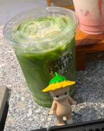
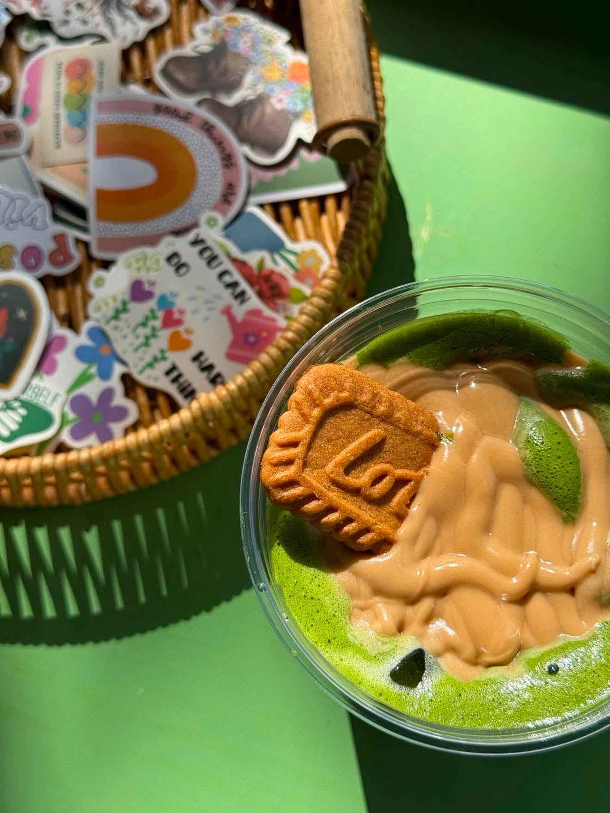
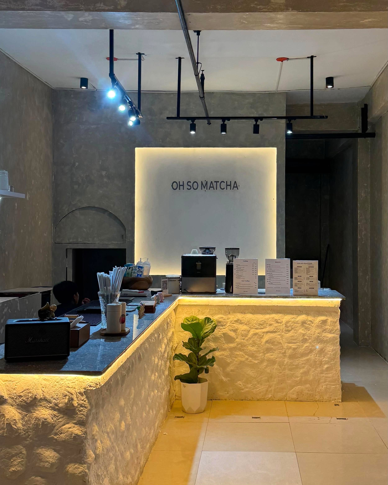
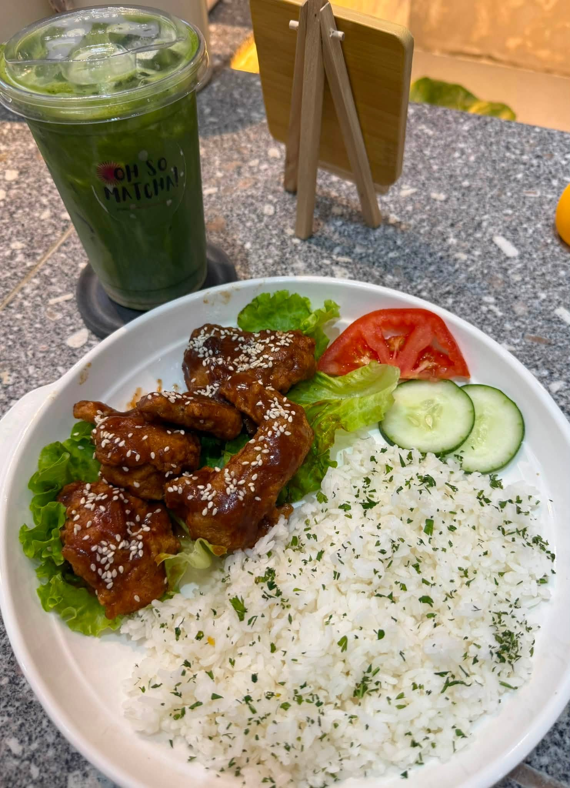
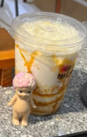
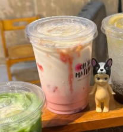
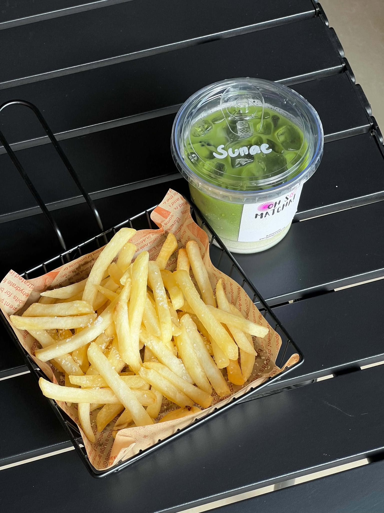

Sunae
₱175
Light Level 1 matcha, smooth and subtly sweet.
Oh So Matcha is a local café in Don Carlos serving matcha creations alongside comforting meals, snacks, and all-day café favorites.

Come in for a bold matcha, stay for breakfast, wings, pasta, sandwiches, rice bowls, and the little details that make the space feel like a neighborhood stop.
About Oh So Matcha →
Matcha is only part of the Oh So Matcha experience. Pair your drink with breakfast, wings, pasta, sandwiches, rice bowls, sides, and more.
Explore the food menu →


Light Level 1 matcha, smooth and subtly sweet.

Bold matcha topped with banana pudding, sweet and indulgent.

Bright strawberry matcha finished with strawberry cold foam.
A local café experience built around easygoing drinks, satisfying food, and a space worth staying in.

Light, bold, fruity, creamy, roasted, and indulgent choices.
All-day breakfast, wings, pasta, sandwiches, sides, and rice bowls.
Find Oh So Matcha in Purok 4 Poblacion, Don Carlos.
Monday to Sunday, 6:00 AM to 10:00 PM.
Real words from people who have tried the drinks and experienced the café.
Their matcha is actually SO good, super creamy, not too sweet, and the matcha flavor is chef’s kiss. The vibe is cute and chill too. definitely found my new matcha spot
I never thought I could find a cafe this good here in Don Carlos! As an OFW in Taiwan, it has been a long time since I tasted matcha drinks that felt authentic in the tongue. Must try again!
Purok 4 Poblacion, Barnido Building, Don Carlos, Bukidnon, Philippines, 8712